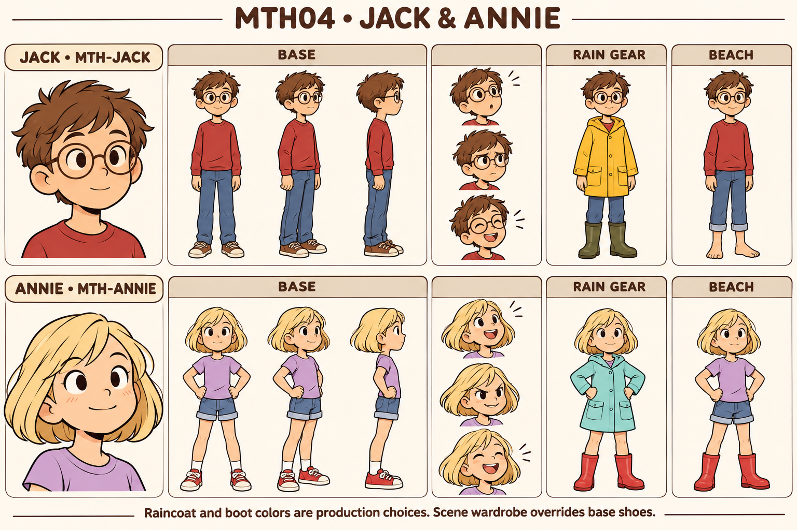
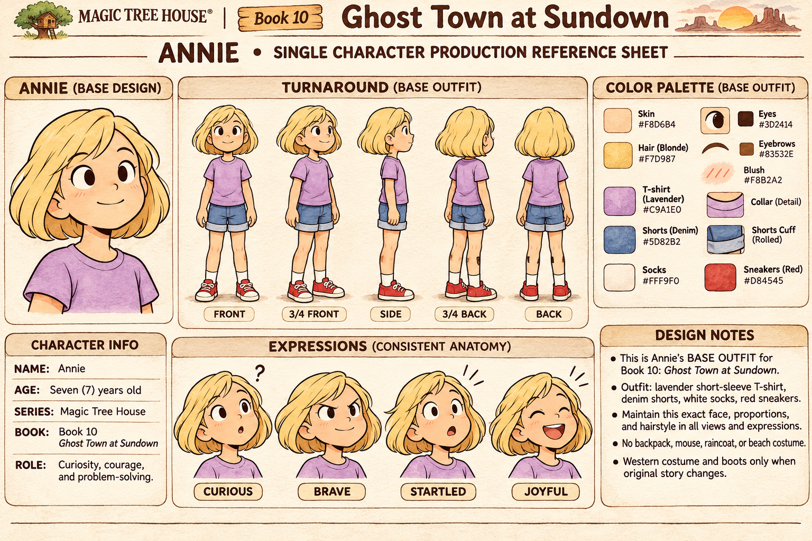
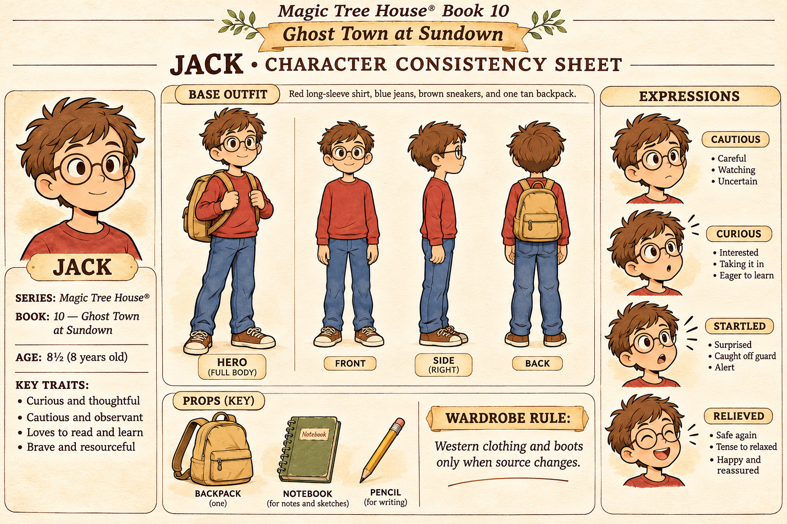

MTH04 original visual style master / Jack and Annie retained; seven other sheets regenerated directly from MTH04 references.
4권의 공통 얼굴·체형을 우선합니다. 우비와 해변 의상은 10권에 적용하지 않습니다. 서부 복장과 소품은 원문에 따라 변경합니다.

검수한 기본 복장 시트. 서부 복장은 원문에 나온 뒤에만 적용합니다.

검수한 기본 복장 시트. 서부 복장은 원문에 나온 뒤에만 적용합니다.

나이 기준은 8½세입니다. 이미지의 괄호 속 8 years old 표기는 오류이며 적용하지 않습니다.